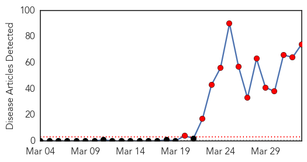
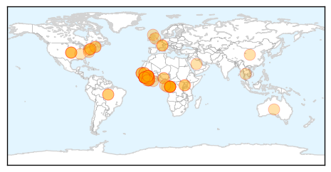
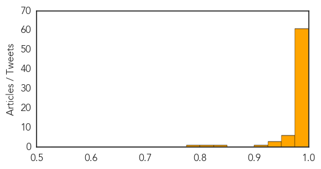
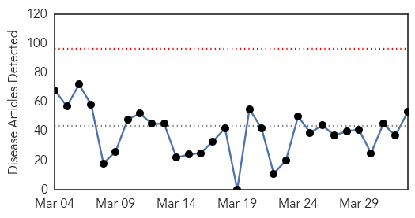
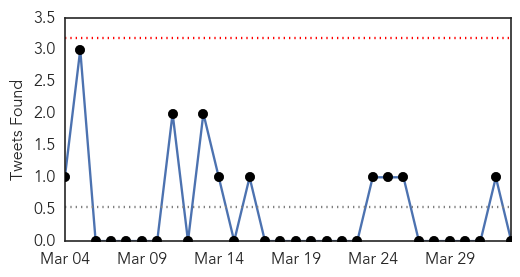
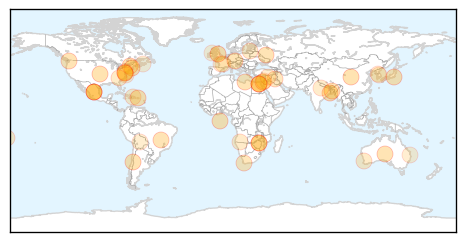
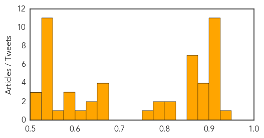

Ebola
30-Day Web Trend
13 alerts, 0 warnings

30-Day Twitter Trend
Article Locations
Article Confidences
Top Articles:
- 1.000
- Atleast 84 killed in Guinea's Ebola epidemic
- 1.000
- Ebola fears grips West Africa
- 1.000
- U.S. team heads to Africa to track deadly Ebola outbreak
- 1.000
- Saudi Arabia suspends issuing visas over ebola outbreak
- 1.000
- U.S. team heads to Africa to track deadly Ebola outbreak
- 1.000
- U.S. team heads to Africa to track deadly Ebola outbreak
- 1.000
- Explainer: What is the Ebola virus?
- 1.000
- Ebola outbreak kills at least 87 in Africa
- 1.000
- Morocco steps up guard after Ebola outbreak in Guinea
- 1.000
- Ebola outbreak in Guinea is unprecedented, says aid agency
- 1.000
- U.S. team heads to Africa to track deadly Ebola outbreak
- 1.000
- Airport health teams tracking passengers from West Africa, or with fever
- 1.000
- CDC sends team to investigate Ebola outbreak in Guinea
- 1.000
- Scale of Guinea's Ebola epidemic unprecedented, aid agency says
- 1.000
- Senegal shuts land border with Guinea to prevent Ebola spreading
- 1.000
- Ebola outbreak medic reveals true horror in Guinea
- 1.000
- Ebola outbreak medic reveals true horror in Guinea
- 1.000
- Ebola outbreak medic reveals true horror in Guinea
- 1.000
- Ebola outbreak spreads panic in West Africa
- 1.000
- ABC News (Australian Broadcasting Corporation)
- 1.000
- Why Is Guinea's Ebola Outbreak So Unusual?
- 1.000
- Ebola virus: Haj, Umrah visas suspended for pilgrims from Liberia, Guinea
- 1.000
- Deadly Ebola Outbreak In Guinea Is Spreading
- 1.000
- Ebola Virus Outbreak Unprecedented
- 1.000
- Deadly Ebola Spreading Into Populated Guinea Capital
- 0.999
- Worst Ebola outbreak in seven years fuels concern as death toll climbs to 83
- 0.999
- Protecting children as Ebola strikes Western Africa — SOS Children
- 0.999
- Death Toll In Guinea Ebola Outbreak Mounts To 80
- 0.999
- WHO says Ebola outbreak small as international response is slammed
- 0.999
- World Health Organization Downplays Ebola Outbreak in Guinea
- 0.999
- Ebola outbreak in Guinea played down by World Health Organization
- 0.999
- Information has become central to containing Ebola - Guinea
- 0.999
- Regular Press Briefing by the Information Service: Ebola (1 April 2014) - Guinea
- 0.999
- Inovio Pharmaceuticals, Inc. Stock - Yahoo! Finance
- 0.999
- Ebola Outbreak In West Africa Causes Panic
- 0.998
- Kenya : Ebola outbreak reaches 'unprecedented levels' as it sweeps across west coast of Africa
- 0.998
- Ebola virus disease, West Africa (Situation as of 2 April 2014) - Guinea
- 0.998
- WHO says Guinea Ebola outbreak small as MSF slams international response
- 0.997
- "fever" takes hold of the people in Conakry
- 0.997
- Medical worker tells of lethal Ebola outbreak horror
- 0.997
- Ebola virus: WHO is taking outbreak 'very seriously' as Saudi Arabia suspends visas over contagion fears
- 0.997
- As Ebola enters Liberia, Sierra Leone Government Urges Citizens to Take Precautions
- 0.996
- Fear stalks Ebola-hit southern Guinea
- 0.995
- Ebola virus: WHO is taking outbreak 'very seriously' as contagion fears grow
- 0.993
- Guinea: 'unprecedented' Ebola death toll rises
- 0.992
- Kenya : Are we safe from spread of Ebola?
- 0.992
- Ebola outbreak kills 80 in Guinea: WHO
- 0.991
- Guinea's Ebola victims wait for death
- 0.989
- Irish travel warning over Ebola outbreak
- 0.989
- Guinea Ebola death toll hits 84
Showing top 50 articles...
Top Tweets:
-
No tweets found for Apr 02, 2014
Unknown
30-Day Web Trend
0 alerts, 0 warnings

30-Day Twitter Trend
0 alerts, 0 warnings

Article Locations

Article Confidences
Top Articles:
- 0.934
- Brucella canis infections diagnosed in Calgary dogs -- CALGARY, April 1, 2014
- 0.917
- Chicago Tribune
- 0.917
- Chicago Tribune
- 0.917
- Chicago Tribune
- 0.917
- Chicago Tribune
- 0.917
- Chicago Tribune
- 0.917
- Chicago Tribune
- 0.917
- Chicago Tribune
- 0.917
- Chicago Tribune
- 0.917
- Chicago Tribune
- 0.910
- The world windows to Thailand
- 0.904
- Kolkata in grip of mystery fever
- 0.890
- Wards shut as Conquest is hit by vomiting bug
- 0.878
- Vet issues warning after deadly dog disease found at Ballina
- 0.878
- Deadly Porcine Virus Identified In Vermont
- 0.875
- German doctors probe fatal MERS case of Abu Dhabi farmer
- 0.866
- Members of the Movement of Small Farmers hold a banner during the speech of Venezuela's opposition leader Machado at a meeting of the Brazilian Senate's Foreign Affairs Committee in Brasilia
- 0.866
- Libya says moves oil security force headquarters to east, meets rebel demand
- 0.866
- Death toll rises to 29 in Washington mudslide
- 0.866
- One person killed in third blast at Cairo University
- 0.866
- Russia wants good economic ties with US, EU despite Ukraine crisis
- 0.866
- A Rohingya man carrying his child looks at police and volunteer conducting a national census at a Rohingya village in Sittwe, the capital of Rakhine State, Myanmar
- 0.866
- Explosion heard outside Cairo University
- 0.802
- Collective will can curb TB epidemic
- 0.800
- SA affected as Zimbabwe bans imports of fresh fruit and vegetables
- 0.792
- 5 Calgary dogs diagnosed with rare infectious disease
- 0.783
- Plastic surgery malpractice deaths or tourism health boom envy
- 0.752
- Iraq mobilizes against polio after first case since 2000 is confirmed - Iraq
- 0.666
- After pink eye, students return to school
- 0.658
- Perth botox health warning after illegal import
- 0.658
- Person exposed to rabies in Gray Court
- 0.656
- Veterinary Service: African swine fever threat level very high in Latvia :: The Baltic Course
- 0.633
- Kamwi not impressed with decline in TB rate
- 0.631
- The Dangers of Medical Tourism
- 0.614
- Auto-analyser machine lying defunct at Dufferin Hospital
- 0.600
- Overuse of blood transfusions increases infection risk
- 0.597
- WA Health issues botox warning after illegal import detected
- 0.575
- Zim bans fresh fruit, vegetable imports - International
- 0.571
- Traveling from Chile to Bolivia or Bolivia to Chile?
- 0.548
- Deadly Cairo bomb blasts target police
- 0.541
- Palestinians renew UN push after Israel delays prisoner release
- 0.541
- Deadly shooting at Fort Hood army base in Texas
- 0.541
- Hollande's ex-partner Ségolène Royal makes political comeback
- 0.541
- Hollande’s ex-partner Ségolène Royal joins new French cabinet
- 0.541
- French woman latest foreign student murdered in Brisbane
- 0.537
- More Emergency Medical Aid Headed to Syria - Syrian Arab Republic
- 0.535
- UPDATE 1-Zimbabwe bans fresh fruit, vegetable imports
- 0.529
- UPDATE 1-Zimbabwe bans fresh fruit, vegetable imports
- 0.527
- U.N. to provide $400,000 to N. Korea over FMD
- 0.526
- Zimbabwe bans fresh fruit, vegetable imports
Showing top 50 articles...
Top Tweets:
-
No tweets found for Apr 02, 2014